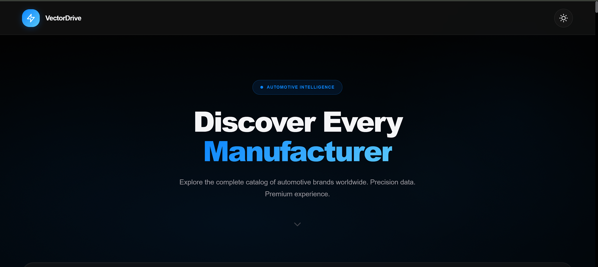

Case Study / 03
VectorDrive
Turning brand discovery into a confident, image-led browsing experience.


The Brief
Give choice a clear shape.
VectorDrive explores a modern automotive discovery interface where brand, image and action work together without turning the page into a catalogue. The brief was to make the first interaction feel premium and decisive while leaving room for richer vehicle exploration.
The strongest constraint was attention: a visitor should understand the category quickly, then know exactly where to continue.
My Approach
Build the browsing rhythm.
I used React and Vite to establish reusable sections, a strong visual hierarchy and a responsive frame that can scale into deeper vehicle exploration later.
I kept the interface image-led, then used spacing, grouping and action placement to prevent the visual treatment from becoming empty decoration.
What I Learned
Images need information.
Editorial imagery can attract attention, but the interface still needs clear signposts and actions so the visitor knows where to go next.
That balance is the transferable lesson: premium presentation works best when the next decision is obvious.
Outcome
A live, scalable concept.
VectorDrive is available as a live Vercel build and a public repository, giving a recruiter or collaborator both the finished experience and the implementation trail. The additional screenshots document the visual system before deeper data and vehicle-detail work is added.